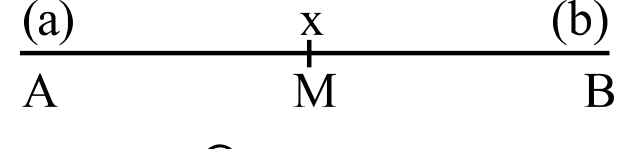
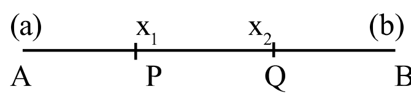
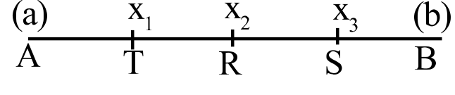

3.1ଉପକ୍ରମଣିକାIntroduction
ଗୋଟିଏ ନିୟମକୁ ଭିତ୍ତି କରି ନିର୍ଦ୍ଦିଷ୍ଟ କ୍ରମ (Order) ରେ ଥିବା ସଂଖ୍ୟାସମୂହକୁ ଏକ ଅନୁକ୍ରମ (Sequence) କୁହାଯାଏ ।
ଉଦାହରଣ ସ୍ୱରୂପ : 2, 4, 6, 8...............; 1, 3, 5, 7 ...............; $\frac{1}{2}, \frac{1}{3}, \frac{1}{4}, \frac{1}{5}$..........; 2, 6, 18, 54............... ଇତ୍ୟାଦି ।
ଅନୁକ୍ରମରେ ଥିବା ପ୍ରତ୍ୟେକ ସଂଖ୍ୟାକୁ ଗୋଟିଏ ଗୋଟିଏ ପଦ (term) କୁହାଯାଏ । ଅନୁକ୍ରମର ବିଶେଷତ୍ୱ ହେଲା, ପ୍ରଥମ ତିନିଟି କିମ୍ବା ଚାରିଟି ପଦକୁ ଲକ୍ଷ୍ୟ କରି ଏହାର ପରବର୍ତ୍ତୀ ପଦଗୁଡ଼ିକୁ ଜାଣି ହୁଏ ।
ସାଧାରଣ ଭାବେ ଲେଖିଲେ ଅନୁକ୍ରମକୁ $t_1, t_2, t_3, t_4, \ldots$ ରୂପେ ଲେଖାଯାଏ । ଏଠାରେ $t_1, t_2, t_3, t_4, \ldots$ ଇତ୍ୟାଦିକୁ ଯଥାକ୍ରମେ ପ୍ରଥମ ପଦ (first term), ଦ୍ୱିତୀୟ ପଦ (second term), ତୃତୀୟ ପଦ (third term) ଏବଂ ଚତୁର୍ଥ ପଦ (fourth term) ବୋଲି ଲେଖାଯାଏ । ସେହିପରି n - ତମ ପଦକୁ $t_n$ ଦ୍ୱାରା ସୂଚାଯାଇଥାଏ । n - ତମ ପଦକୁ ଅନୁକ୍ରମର ସାଧାରଣ ପଦ (General term) କୁହାଯାଏ ।
ଯଦି $t_{n+1} = t_{n+2} = \ldots = 0$ (ଶୂନ) ତେବେ ଅନୁକ୍ରମଟି $t_1, t_2, \ldots, t_n$ ଓ ଏହା ସସୀମ ସଂଖ୍ୟକ ପଦ ବିଶିଷ୍ଟ । ଆମର ଆଲୋଚନାରେ ଆସୁଥିବା ଯେ କୌଣସି ଅନୁକ୍ରମ ସସୀମ (Finite sequence) । ଉକ୍ତ ଅନୁକ୍ରମକୁ $\{t_n\}$ ବୋଲି ଲେଖାଯାଏ । ଅସୀମ ଅନୁକ୍ରମ ସମ୍ପର୍କରେ ଆଲୋଚନା ଉଚ୍ଚତର ଗଣିତରେ ପଢ଼ିବ ।
ନିର୍ଦ୍ଦିଷ୍ଟ ନିୟମକୁ ନେଇ କ୍ରମରେ ଥିବା ଅନୁକ୍ରମକୁ ଗୋଟିଏ ପ୍ରଗତି (Progression) କୁହାଯାଏ ।
ପ୍ରଗତି ସାଧାରଣତଃ ତିନି ପ୍ରକାରର –
(i) ସମାନ୍ତର ପ୍ରଗତି (Arithmetic progression)
(ii) ଗୁଣୋତ୍ତର ପ୍ରଗତି (Geometric progression)
(iii) ହରାତ୍ମକ ପ୍ରଗତି (Harmonic progression)
ପ୍ରତ୍ୟେକ ପ୍ରଗତି ଗୋଟିଏ ପ୍ରକାରର ସଂଖ୍ୟା ଅନୁକ୍ରମ ସୃଷ୍ଟି କରିଥାନ୍ତି । ଏହି ଅଧ୍ୟାୟରେ କେବଳ ସମାନ୍ତର ପ୍ରଗତି ସମ୍ପର୍କରେ ଆଲୋଚନା କରାଯିବ ଓ ଜ୍ୟାମିତିକ ପ୍ରଗତି ତଥା ହରାତ୍ମକ ପ୍ରଗତି ସମ୍ପର୍କରେ ଉଚ୍ଚମାଧ୍ୟମିକ ଗଣିତରେ ଅଧ୍ୟୟନ କରିବ ।
3.2ସମାନ୍ତର ପ୍ରଗତି (Arithmetic Progression (A.P.))
ସମାନ୍ତର ପ୍ରଗତିକୁ ସଂକ୍ଷେପରେ (A. P.) ଲେଖାଯାଏ । ଯଦି କୌଣସି ଅନୁକ୍ରମର ପ୍ରତ୍ୟେକ ପଦରୁ (ପ୍ରଥମଟିକୁ ଛାଡ଼ି) ପୂର୍ବପଦର ବିୟୋଗଫଳ ସର୍ବଦା ସମାନ ହୁଏ, ତେବେ ଅନୁକ୍ରମଟିକୁ ସମାନ୍ତର ପ୍ରଗତି (A. P.) କୁହାଯାଏ । ଏଠାରେ ବିୟୋଗଫଳକୁ ସାଧାରଣ ଅନ୍ତର (Common difference) କୁହାଯାଏ ଓ ଏହାକୁ ସଂକ୍ଷେପରେ 'd' ଦ୍ୱାରା ସୂଚିତ କରାଯାଏ ।
ଅତଏବ ସମାନ୍ତର ପ୍ରଗତି ପାଇଁ $t_2 - t_1 = t_3 - t_2 = t_4 - t_3 = \ldots = t_n - t_{n-1} = d$ ଅଟେ ।
3.2.1ସମାନ୍ତର ପ୍ରଗତିର n-ତମ ପଦ ନିର୍ଣ୍ଣୟ
କୌଣସି A.P. ର ପ୍ରଥମ ପଦ a ଏବଂ ସାଧାରଣ ଅନ୍ତର d ହେଲେ ଏହି ଅନୁକ୍ରମର ସାଧାରଣ ରୂପ
\begin{aligned} t_1 &= a \\ t_2 &= a + d = a + (2 - 1)d \\ t_3 &= a + 2d = a + (3 - 1)d \\ t_4 &= a + 3d = a + (4 - 1)d \\ &\ldots\ldots\ldots\ldots \\ t_n &= a + (n - 1)d \end{aligned}
ଅର୍ଥାତ୍ A.P. ରେ ଥିବା ଅନୁକ୍ରମର ସାଧାରଣ ରୂପଟି $a, a + d, a + 2d, a + 3d, \ldots, a + (n - 1)d$
\text{ସୁତରାଂ n ତମ ପଦର ସୂତ୍ର :} \quad \boxed{t_n = a + (n - 1)d}
ଉଦାହରଣ - 1 : ନିମ୍ନଲିଖିତ ପ୍ରତ୍ୟେକଟି ଗୋଟିଏ ଗୋଟିଏ A.P. ଅଟେ ।
(i) –18, –16, –14, – 12.......
ଏଠାରେ ପ୍ରଥମ ପଦ $a = -18$ ସାଧାରଣ ଅନ୍ତର $d = -16 - (-18) = -14 - (-16) = -12 - (-14) = 2$
(ii) –11, 0, 11, 22, 33, 44.............
ଏଠାରେ ପ୍ରଥମ ପଦ $a = -11$ ଓ ସାଧାରଣ ଅନ୍ତର $d = 0 - (-11) = 11 - 0 = 22 - 11 = 11$
(iii) $\frac{1}{3}, \frac{2}{3}, 1, \frac{4}{3}, \ldots$
ଏଠାରେ ପ୍ରଥମ ପଦ $a = \frac{1}{3}$ ଓ ସାଧାରଣ ଅନ୍ତର $d = \frac{2}{3} - \frac{1}{3} = 1 - \frac{2}{3} = \frac{4}{3} - 1 = \frac{1}{3}$ ଉପରେ ଥିବା A.P. ମାନଙ୍କର ସାଧାରଣ ପଦ $t_n$ ଗୁଡ଼ିକ ଯଥାକ୍ରମେ
(i)\ t_n = -18 + (n - 1)2 = -18 + 2n - 2 = 2n - 20 \qquad (\because t_n = a + (n - 1)d)
(ii)\ t_n = -11 + (n - 1)11 = -11 + 11n - 11 = 11n - 22
(iii)\ t_n = \frac{1}{3} + (n - 1)\frac{1}{3} = \frac{1}{3} + \frac{1}{3}n - \frac{1}{3} = \frac{1}{3}n
ପୁନଶ୍ଚ କୌଣସି A.P. ଏକ ନିର୍ଦ୍ଦିଷ୍ଟ ପଦ ନିର୍ଣ୍ଣୟ କରିବାକୁ ହେଲେ, ଉପରୋକ୍ତ ସୂତ୍ରରେ a, n ମାନ ସ୍ଥାପନ କରି $t_n$ ମଧ୍ୟ ନିର୍ଣ୍ଣୟ କରାଯାଇପାରିବ ।
ମନେକର ଉପରୋକ୍ତ ପ୍ରଥମ A.P. ର ଦଶମ ପଦ ନିର୍ଣ୍ଣୟ କରିବାକୁ ହେବ ।
t_{10} = -18 + (10 - 1)2 = -18 + 18 = 0
3.2.2ସମାନ୍ତର ପ୍ରଗତିର ପ୍ରଥମ n - ସଂଖ୍ୟକ ପଦର ଯୋଗଫଳ
A.P. ର ପ୍ରଥମ n ସଂଖ୍ୟକ ପଦର ଯୋଗଫଳର ସୂତ୍ରକୁ ପ୍ରଥମେ ଜର୍ମାନୀର ବିଖ୍ୟାତ ଗଣିତଜ୍ଞ ଗାଉସ୍ (Gauss) ତାଙ୍କ ବାଲ୍ୟକାଳରେ ନିର୍ଣ୍ଣୟ କରିପାରିଥିଲେ । ତାଙ୍କର ସ୍କୁଲ ଶିକ୍ଷକ 1 ରୁ 100 ପର୍ଯ୍ୟନ୍ତ ଗଣନ ସଂଖ୍ୟାମାନଙ୍କ ଯୋଗଫଳ ନିର୍ଣ୍ଣୟ କରିବାକୁ ଗାଉସ୍ଙ୍କୁ କହିଲେ । ଶିକ୍ଷକଙ୍କ ଧାରଣା ଥିଲା ଏଥିପାଇଁ ଯଥେଷ୍ଟ ସମୟ ଲାଗିବ ଓ ଗାଉସ୍ ଚୁପ୍ଚାପ୍ ରହି ଏହା କରିବେ । ମାତ୍ର ଅଳ୍ପ ସମୟରେ ଗାଉସ୍ ଏହାର ଉତ୍ତର ପାଇଥିଲେ । ସେ ଯେଉଁ ପଦ୍ଧତିରେ କଲେ ତାହା ନିମ୍ନରେ ଦିଆଗଲା :
ମନେକର 1 ରୁ 100 ପର୍ଯ୍ୟନ୍ତ ଗଣନ ସଂଖ୍ୟାମାନଙ୍କ ଯୋଗଫଳ $S_{100}$ ତେବେ
\begin{aligned} S_{100} &= 1 + 2 + 3 + \ldots + 98 + 99 + 100 \\ S_{100} &= 100 + 99 + 98 + \ldots + 3 + 2 + 1 \\ \hline \text{ମିଶାଇଲେ} \quad 2S_{100} &= 101 + 101 + 101 + \ldots + 101 + 101 + 101 \end{aligned}
\therefore 2S_{100} = 101 \times 100 \Rightarrow S_{100} = \frac{101 \times 100}{2} = 5050
ବର୍ତ୍ତମାନ ଆମେ $a, a + d, a + 2d, a + 3d$, ସମାନ୍ତର ପ୍ରଗତିର ପ୍ରଥମ n ଗୋଟି ପଦର ଯୋଗଫଳ ନିର୍ଣ୍ଣୟ କରିବା । ମନେକର n ତମ ପଦଟି $t_n = a + (n - 1)d = \ell$ ହେଉ । ତେବେ ଶେଷ ପଦ $= \ell$, ଏହାର ପୂର୍ବବର୍ତ୍ତୀ ପଦ $\ell - d$, $\ell - d$ ର ପୂର୍ବବର୍ତ୍ତୀ ପଦ $\ell - 2d$ ଇତ୍ୟାଦି ।
ମନେକର n ତମ ପଦ ପର୍ଯ୍ୟନ୍ତ ଯୋଗଫଳ $S_n$
\therefore S_n = a + (a + d) + \ldots + (\ell - d) + \ell
S_n = \ell + (\ell - d) + \ldots + (a + d) + a \qquad (\text{ପଦଗୁଡ଼ିକ ଓଲଟାକ୍ରମରେ ଲେଖାଯାଇଛି})
\text{ମିଶାଇଲେ} \quad 2S_n = (a + \ell) + (a + \ell) + \ldots \text{ n ସଂଖ୍ୟକ ପଦପର୍ଯ୍ୟନ୍ତ}
\therefore 2S_n = n(a + \ell) \qquad \therefore S_n = \frac{n}{2}(a + \ell)
\therefore \text{n ସଂଖ୍ୟକ ପଦର ସମଷ୍ଟିର ସୂତ୍ର :} \quad \boxed{S_n = \frac{n}{2}(a + \ell)}
\text{ଅର୍ଥାତ୍} \quad \boxed{S_n = \frac{n}{2}(\text{ପ୍ରଥମ ପଦ} + \text{n ତମ ପଦ})}
ପୁନଶ୍ଚ ଉପରୋକ୍ତ ସୂତ୍ରରେ $\ell = a + (n - 1)d$ ସ୍ଥାପନ କଲେ
S_n = \frac{n}{2}\{a + a + (n - 1)d\} \Rightarrow S_n = \frac{n}{2}\{2a + (n - 1)d\}
\therefore \text{n ସଂଖ୍ୟକ ପଦର ସମଷ୍ଟିର ଅନ୍ୟ ଏକ ସୂତ୍ର :} \quad \boxed{S_n = \frac{n}{2}\{2a + (n - 1)d\}}
ପ୍ରମାଣ : ମନେକର ସମାନ୍ତର ପ୍ରଗତିର ପ୍ରଥମ ପଦ a ଓ ସାଧାରଣ ଅନ୍ତର d ଓ ସମାନ୍ତର ପ୍ରଗତିଟି $a, a + d, a + 2d, \ldots, a + (n - 1)d$,
(i) ର ସତ୍ୟତା ପାଇଁ ପ୍ରତ୍ୟେକ ପଦରେ k ସଂଖ୍ୟାଟି ଯୋଗ କଲେ ଲବ୍ଧ ଅନୁକ୍ରମଟି $(a + k), (a + k) + d, (a + k) + 2d, \ldots, (a + k) + (n - 1)d$ ହେବ ।
ଏହା ମଧ୍ୟ ଏକ ସମାନ୍ତର ପ୍ରଗତି ଯେଉଁଥିରେ ପ୍ରଥମ ପଦ $a + k$ ଓ ସାଧାରଣ ଅନ୍ତର d,
ଠିକ୍ ଅନୁରୂପ ଭାବେ (ii), (iii) ଓ (iv) ର ସତ୍ୟତା ପ୍ରତିପାଦନ କରାଯାଇପାରିବ ।
ଉଦାହରଣ - 2 :
(a) ଓଲଟାଇ ମିଶାଇବା ପଦ୍ଧତିରେ 15 ଠାରୁ 85 ପର୍ଯ୍ୟନ୍ତ ଗଣନ ସଂଖ୍ୟାମାନଙ୍କର ଯୋଗଫଳ ନିର୍ଣ୍ଣୟ କର ।
(b) ଗୋଟିଏ A.P. ର ପ୍ରଥମ ପଦ 4 ଓ ସାଧାରଣ ଅନ୍ତର 3 ହେଲେ
(i) A.P. ଟି ଲେଖ,
(ii) A.P. ର 33 ତମ ପଦ $(t_{33})$ ନିର୍ଣ୍ଣୟ କର ଓ
(iii) A.P. ର ପ୍ରଥମ 40 ଟି ପଦର ସମଷ୍ଟି $(s_{40})$ ନିର୍ଣ୍ଣୟ କର ।
ସମାଧାନ :
(a) 1 ରୁ 85 ପର୍ଯ୍ୟନ୍ତ ଥିବା ଗଣନ ସଂଖ୍ୟାମାନେ ହେଲେ 85 ଗୋଟି ଓ 1 ରୁ 14 ପର୍ଯ୍ୟନ୍ତ ଥିବା ଗଣନ ସଂଖ୍ୟାମାନେ ହେଲେ 14 ଗୋଟି ।
$\therefore$ 15 ରୁ 85 ପର୍ଯ୍ୟନ୍ତ ଥିବା ଗଣନ ସଂଖ୍ୟାମାନଙ୍କର ସଂଖ୍ୟା $= 85 - 14 = 71$ ବିକଳ୍ପ ହିସାବ : 15 ରୁ 85 ପର୍ଯ୍ୟନ୍ତ ସଂଖ୍ୟାମାନଙ୍କର ସଂଖ୍ୟା $= (85 - 15) + 1 = 71$
ମନେକର 15 ରୁ 85 ପର୍ଯ୍ୟନ୍ତ ଗଣନ ସଂଖ୍ୟାଗୁଡ଼ିକର ଯୋଗଫଳ $= S_{71}$ । ଅତଏବ
\begin{aligned} S_{71} &= 15 + 16 + 17 + 18 + \ldots + 83 + 84 + 85 \\ S_{71} &= 85 + 84 + 83 + 82 + \ldots + 17 + 16 + 15 \quad (\text{ଓଲଟାଇ ଲେଖିଲେ}) \\ \hline 2S_{71} &= 100 + 100 + 100 + 100 \ldots + 100 + 100 + 100 \end{aligned}
\therefore 2S_{71} = 100 \times 71
\Rightarrow S_{71} = \frac{100 \times 71}{2} = 50 \times 71 = 3550 \qquad (\text{ଉତ୍ତର})
\text{ସୂତ୍ର ପ୍ରୟୋଗ କଲେ, } S_{71} = \frac{71}{2}(15 + 85) = 50 \times 71 = 3550 \qquad \left[\because S_n = \frac{n}{2}\{a + \ell\}\right]
ଏଠାରେ ପ୍ରଥମ ପଦ (a) = 15 ଏବଂ ଶେଷପଦ $(\ell)$ = 85 ।
(b)\quad (i)\ \text{A. P.} = 4, 7, 10, 13, 17, \ldots \qquad [\because a = 4 \text{ ଏବଂ } d = 3]
(ii)\ t_{33} = 4 + (33 - 1) \times 3 = 100 \qquad [\because t_n = a + (n - 1)d]
(iii)\ \text{40 ଟି ପର୍ଯ୍ୟନ୍ତ ମିଶାଣଫଳ } (S_{40}) = \frac{40}{2}\{2 \times 4 + (40 - 1)3\} = 20(8 + 117)
\Rightarrow S_{40} = 20 \times 125 \qquad \left[\because S_n = \frac{n}{2}\{2a + (n - 1)d\}\right]
\Rightarrow S_{40} = 2500 \qquad (\text{ଉତ୍ତର})
ଉଦାହରଣ - 3 : ଗୋଟିଏ A.P. ର $t_4 = 11$, $t_{10} = 16$ ହେଲେ, $t_{21}$ ଏବଂ ପ୍ରଥମ 40 ଗୋଟି ପଦର ଯୋଗଫଳ ନିରୂପଣ କର ।
ସମାଧାନ : ମନେକର ପ୍ରଥମ ପଦ = a ଏବଂ ସାଧାରଣ ଅନ୍ତର = d
\text{ଦତ୍ତ ଅଛି : } t_4 = 11 \Rightarrow a + (4 - 1)d = 11 \Rightarrow a + 3d = 11 \quad \ldots (1)
\text{ଦତ୍ତ } t_{10} = 16 \Rightarrow a + (10 - 1)d = 16 \Rightarrow a + 9d = 16 \quad \ldots (2)
(1) \text{ ଓ } (2) \text{ ରୁ} \Rightarrow (a + 9d) - (a + 3d) = 16 - 11 \Rightarrow 6d = 5 \Rightarrow d = \frac{5}{6}
\text{ବର୍ତ୍ତମାନ } (1) \Rightarrow a + 3 \times \frac{5}{6} = 11 \Rightarrow a = 11 - \frac{5}{2} = \frac{17}{2}
\text{ତେଣୁ } t_{21} = a + (21 - 1)d = \frac{17}{2} + 20 \times \frac{5}{6} = \frac{151}{6} = 25\frac{1}{6} \qquad (\text{ଉତ୍ତର})
\text{ସୂତ୍ର ପ୍ରୟୋଗ କଲେ } S_{40} = \frac{40}{2}\left\{2 \times \frac{17}{2} + (40 - 1)\frac{5}{6}\right\}
\Rightarrow S_{40} = 20\left(17 + \frac{65}{2}\right) = 340 + 650 = 990 \qquad (\text{ଉତ୍ତର})
ଉଦାହରଣ - 4 : 2, 4, 6, 8, ... ଅନୁକ୍ରମର $S_{50}$ ନିର୍ଣ୍ଣୟ କର ।
ସମାଧାନ : ଏଠାରେ $t_2 - t_1 = 4 - 2 = 2$, $t_3 - t_2 = 6 - 4 = 2$, $t_4 - t_3 = 8 - 6 = 2$ ....ଇତ୍ୟାଦି ।
$\therefore$ ଦତ୍ତ ଅନୁକ୍ରମଟି ଏକ A.P. ଅଟେ ଏବଂ ଏହାର $a = 2$ ଓ $d = 2$
\therefore S_{50} = \frac{50}{2}\{2 \times 2 + (50 - 1)2\} = 2550 \quad \left[\because S_n = \frac{n}{2}\{2a + (n - 1)d\}\right] \quad (\text{ଉତ୍ତର})
ଉଦାହରଣ - 5 : 27 + 24 + 21+ ... ... ର କେତୋଟି ପଦ ଯୋଗକଲେ ଯୋଗଫଳ 132 ହେବ ? ଦୁଇଟି ଉତ୍ତରର ତାତ୍ପର୍ଯ୍ୟ ବୁଝାଅ ।
ସମାଧାନ : ଏଠାରେ ପ୍ରଥମ ପଦ $a = 27$ ଓ ସାଧାରଣ ଅନ୍ତର $d = 24 - 27 = 21 - 24 = -3$ ଇତ୍ୟାଦି ।
ତେଣୁ ଦତ୍ତ ଅନୁକ୍ରମଟି 27, 24, 21, .... A.P. ରେ ଅଛି ।
ମନେକର ପଦ ସଂଖ୍ୟା n ହେଲେ ଯୋଗଫଳ = 132 $\therefore S_n = 132$
\Rightarrow \frac{n}{2}\{2a + (n - 1)d\} = 132 \Rightarrow \frac{n}{2}\{2 \times 27 + (n - 1)(-3)\} = 132
\Rightarrow \frac{n}{2}(57 - 3n) = 132 \Rightarrow n(57 - 3n) = 264 \Rightarrow -3n^2 + 57n - 264 = 0
\Rightarrow n^2 - 19n + 88 = 0 \Rightarrow (n - 11)(n - 8) = 0
$\Rightarrow n = 11$ ବା 8 ଅର୍ଥାତ୍ A.P. ର 11 ଗୋଟି ପଦର ଯୋଗଫଳ 132 ହେବ ଏବଂ 8 ଗୋଟି ପଦର ଯୋଗଫଳ ମଧ୍ୟ 132 ହେବ । ।
\text{ତାତ୍ପର୍ଯ୍ୟ : ବର୍ତ୍ତମାନ } t_9 = 27 + (9 - 1)(-3) = 3, \qquad t_{10} = t_9 + d = 3 + (-3) = 0
t_{11} = t_{10} + d = 0 + (-3) = -3
\Rightarrow t_9 + t_{10} + t_{11} = 3 + 0 + (-3) = 0
\Rightarrow S_{11} = S_8 + t_9 + t_{10} + t_{11} = S_8 + 0 = S_8
ଅର୍ଥାତ୍ ଯୋଗଫଳରେ 8 କିମ୍ବା 11 ଗୋଟି ପଦ ରହିଲେ ଯୋଗଫଳ 132 ହେବ । (ଉତ୍ତର)
ଉଦାହରଣ - 6 : ଗୋଟିଏ ଅନୁକ୍ରମର $t_n = 2n + 3$ ହେଲେ $S_n$ ନିର୍ଣ୍ଣୟ କର ।
ସମାଧାନ : $t_n = 2n + 3$ ଦୁଇ ପାର୍ଶ୍ୱରେ n ବଦଳରେ 1 ଲେଖିଲେ ପାଇବା
t_1 = 2 \times 1 + 3 = 5 \Rightarrow a = 5
ସେହିଭଳି n ବଦଳରେ 2 ଲେଖିଲେ ଏବଂ 3 ଲେଖିଲେ ପାଇବା
t_2 = 2 \times 2 + 3 = 7 \text{ ଏବଂ } t_3 = 2 \times 3 + 3 = 9
t_3 - t_2 = 9 - 7 = 2 \text{ ଏବଂ } t_2 - t_1 = 7 - 5 = 2 \qquad \therefore t_3 - t_2 = t_2 - t_1 = 2
$\therefore$ ଦତ୍ତ ସାଧାରଣ ଅନ୍ତର 2 ହେତୁ ଲବ୍ଧ ଅନୁକ୍ରମଟି ଏକ A.P. ଯାହାର $d = 2$
S_n = \frac{n}{2}[2a + (n - 1)d] = \frac{n}{2}[2 \times 5 + (n - 1) \times 2]
= \frac{n}{2}(10 + 2n - 2) = \frac{n}{2}(2n + 8) = n(n + 4) = n^2 + 4n \qquad (\text{ଉତ୍ତର})
ଉଦାହରଣ - 7 : ଗୋଟିଏ ଅନୁକ୍ରମର $S_n = 3n + 4n^2$ ହେଲେ, $t_7$ କେତେ ?
ସମାଧାନ : ଦତ୍ତ ଅଛି $S_n = 3n + 4n^2$
(n–1) ସଂଖ୍ୟକ ପଦର ସମଷ୍ଟି $S_{n-1}$ ହେଲେ ($S_n$ ରେ n ପରିବର୍ତ୍ତେ n–1 ଲେଖିଲେ)
S_{n-1} = 3(n - 1) + 4(n - 1)^2 = 3n - 3 + 4n^2 - 8n + 4 = -5n + 4n^2 + 1
\text{ମାତ୍ର } S_n = S_{n-1} + t_n \Rightarrow 3n + 4n^2 = -5n + 4n^2 + 1 + t_n
\Rightarrow t_n = 8n - 1 \quad \ldots\ldots\ldots (i)
\therefore t_7 = 8 \times 7 - 1 = 55 \qquad [(i) \text{ ରେ } n = 7 \text{ ଲେଖିଲେ}] \qquad (\text{ଉତ୍ତର})
ଉଦାହରଣ - 8 : ପ୍ରମାଣ କର ଯେ, ଯଦି $a^2, b^2, c^2$ ସଂଖ୍ୟାତ୍ରୟ A.P ରେ ରହନ୍ତି, ତେବେ $\frac{1}{b + c}, \frac{1}{c + a}, \frac{1}{a + b}$ A.P. ରେ ରହିବେ ।
ସମାଧାନ : ଯେହେତୁ $a^2, b^2, c^2$ ସଂଖ୍ୟାତ୍ରୟ A.P. ରେ ରହିଛନ୍ତି ତେଣୁ ପ୍ରତ୍ୟେକ ସଂଖ୍ୟାରେ $ab + bc + ca$ ଯୋଗ କଲେ ନୂତନ ସଂଖ୍ୟାତ୍ରୟ ମଧ୍ୟ A.P. ରେ ରହିବେ । (ଦ୍ରଷ୍ଟବ୍ୟ - 3)
$\therefore a^2 + ab + bc + ca, b^2 + ab + bc + ca, c^2 + ab + bc + ca$ A.P. ରେ ରହିବେ ।
$\Rightarrow a(a + b) + c(a + b), b(a + b) + c(a + b), c(b + c) + a(b + c)$ A.P. ରେ ରହିବେ ।
$\Rightarrow (a + b)(c + a), (a + b)(b + c), (b + c)(c + a)$ A.P. ରେ ରହିବେ ।
ପ୍ରତ୍ୟେକ ପଦକୁ $(a + b)(b + c)(c + a)$ ଦ୍ୱାରା ଭାଗ କଲେ ନୂତନ ସଂଖ୍ୟାତ୍ରୟ ମଧ୍ୟ A.P. ରେ ରହିବେ ।
\frac{(a + b)(c + a)}{(a + b)(b + c)(c + a)}, \frac{(a + b)(b + c)}{(a + b)(b + c)(c + a)}, \frac{(b + c)(c + a)}{(a + b)(b + c)(c + a)} \text{ A.P. ରେ ରହିବେ ।}
\therefore \frac{1}{b + c}, \frac{1}{c + a}, \frac{1}{a + b} \text{ A.P. ରେ ରହିବେ ।} \qquad (\text{ପ୍ରମାଣିତ})
ଉଦାହରଣ - 9 : ଦର୍ଶାଅ ଯେ, ଗୋଟିଏ A.P. ର $t_{m+n} + t_{m-n} = 2t_m$
ସମାଧାନ : ମନେକର A.P. ର ପ୍ରଥମ ପଦ ଏବଂ ସାଧାରଣ ଅନ୍ତର ଯଥାକ୍ରମେ a ଓ d
\therefore t_{m+n} = a + (m + n - 1)d \text{ ଏବଂ } t_{m-n} = a + (m - n - 1)d
\begin{aligned} t_{m+n} + t_{m-n} &= (a + a) + (m + n - 1 + m - n - 1)d = 2a + (2m - 2)d \\ &= 2\{a + (m - 1)d\} = 2t_m \end{aligned}
\therefore t_{m+n} + t_{m-n} = 2t_m \qquad (\text{ପ୍ରମାଣିତ})
ଅନୁଶୀଳନୀ - 3 (a)
28 questions · pages 55–59
3.3ଅନ୍ତର ସୂତ୍ରDifference formula
ପୂର୍ବରୁ ସମାନ୍ତର ପ୍ରଗତିରେ ଥିବା ପଦମାନଙ୍କର ମିଶାଣ ପାଇଁ ‘ଓଲଟାଇ ମିଶାଇବା’ କୌଶଳ ତୁମେ ଜାଣିଛ । ସେହିପରି ଅନ୍ୟ ଏକ କୌଶଳ ‘ଅନ୍ତର ସୂତ୍ର’ ମଧ୍ୟ ଏକ ସୁନ୍ଦର କୌଶଳ ଯାହାର ପ୍ରୟୋଗ ବିଷୟରେ ବର୍ତ୍ତମାନ ଜାଣିବା ।
\text{ଅନ୍ତର ସୂତ୍ର :} \quad \frac{1}{n(n + 1)} = \frac{1}{n} - \frac{1}{n + 1} \quad \left[\because \frac{1}{n} - \frac{1}{n + 1} = \frac{n + 1 - n}{n(n + 1)} = \frac{1}{n(n + 1)}\right]
ଏହି ସୂତ୍ରଟିକୁ ଅନ୍ତର ସୂତ୍ର କୁହାଯାଏ । କାରଣ ଏଠାରେ ଗୋଟିଏ ପଦକୁ ଦୁଇଟି ପଦର ଅନ୍ତର ରୂପେ ପ୍ରକାଶ କରାଯାଇଛି । ଏହି ସୂତ୍ର ପ୍ରୟୋଗ କରି ପାଇବା : $\frac{1}{1 \times 2} = \frac{1}{1} - \frac{1}{2}$ ଏବଂ $\frac{1}{2 \times 3} = \frac{1}{2} - \frac{1}{3}$
ନିମ୍ନ ଉଦାହରଣକୁ ଲକ୍ଷ୍ୟ କର ।
ଉଦାହରଣ - 10 : $\frac{1}{1 \times 2} + \frac{1}{2 \times 3} + \frac{1}{3 \times 4} + \ldots + \frac{1}{n(n + 1)}$ ର ସମଷ୍ଟି ନିର୍ଣ୍ଣୟ କର ।
ସମାଧାନ : ଅନ୍ତର ସୂତ୍ର ପ୍ରୟୋଗ କଲେ
\begin{aligned} \frac{1}{1 \times 2} &= \frac{1}{1} - \frac{1}{2} \\ \frac{1}{2 \times 3} &= \frac{1}{2} - \frac{1}{3} \\ \frac{1}{3 \times 4} &= \frac{1}{3} - \frac{1}{4} \\ &\ldots\ldots \\ \frac{1}{n(n + 1)} &= \frac{1}{n} - \frac{1}{n + 1} \end{aligned}
\text{ମିଶାଇଲେ,} \quad \frac{1}{1 \times 2} + \frac{1}{2 \times 3} + \frac{1}{3 \times 4} + \ldots + \frac{1}{n(n + 1)} = 1 - \frac{1}{n(n + 1)}
\therefore S_n = \frac{n + 1 - 1}{n + 1} = \frac{n}{n + 1} \qquad (\text{ଉତ୍ତର})
ପୂର୍ବରୁ ପ୍ରଥମ n ସଂଖ୍ୟକ ଗଣନ ସଂଖ୍ୟା, ଅଯୁଗ୍ମ ଗଣନ ସଂଖ୍ୟା ଓ ଯୁଗ୍ମ ଗଣନ ସଂଖ୍ୟାମାନଙ୍କର ଯୋଗଫଳ ନିର୍ଣ୍ଣୟ କରିବାର କୌଶଳ ତୁମେମାନେ ଜାଣିଛ, ଯାହାକୁ ନିମ୍ନରେ ଦିଆଯାଇଛି ।
(i)ପ୍ରଥମ n ସଂଖ୍ୟକ ଗଣନ ସଂଖ୍ୟା ର ଯୋଗଫଳNatural Numbers
ମନେକର $S_n = 1 + 2 + 3 + \ldots n$
ଏଠାରେ ପ୍ରଥମ ପଦ = 1, ସାଧାରଣ ଅନ୍ତର = 1, ପଦସଂଖ୍ୟା= n
S_n = \frac{n}{2}\{2 \times 1 + (n - 1)1\} = \frac{n}{2}(2 + n - 1) = \frac{n(n + 1)}{2} \qquad \ldots\ldots\ldots (1)
\text{ସୂତ୍ର :} \quad \boxed{1 + 2 + 3 + \ldots + n = \frac{n(n + 1)}{2}}
(ii)ପ୍ରଥମ n ସଂଖ୍ୟକ ଅଯୁଗ୍ମ ଗଣନ ସଂଖ୍ୟା ମାନଙ୍କର ଯୋଗଫଳOdd Natural Numbers
ମନେକର, $S_n = 1 + 3 + 5 + \ldots$ n ସଂଖ୍ୟକ ପଦ ପର୍ଯ୍ୟନ୍ତ
ଏଠାରେ ପ୍ରଥମ ପଦ = 1, ସାଧାରଣ ଅନ୍ତର = 2, ପଦସଂଖ୍ୟା = n
S_n = \frac{n}{2}\{2 \times 1 + (n - 1)2\} = \frac{n}{2}(2 + n - 2) = \frac{n}{2} \cdot 2n = n^2 \qquad \ldots\ldots\ldots (2)
\text{ସୂତ୍ର :} \quad \boxed{1 + 3 + 5 + \ldots + \text{n ସଂଖ୍ୟକ ପଦ ପର୍ଯ୍ୟନ୍ତ} = n^2}
(iii)ପ୍ରଥମ n ସଂଖ୍ୟକ ଯୁଗ୍ମ ଗଣନ ସଂଖ୍ୟା ମାନଙ୍କର ଯୋଗଫଳEven Natural Numbers
\begin{aligned} \text{ମନେକର, } S_n &= 2 + 4 + 6 + \ldots \text{ n ସଂଖ୍ୟକ ପଦ ପର୍ଯ୍ୟନ୍ତ} \\ &= 2(1 + 2 + 3 + \ldots \text{ n ସଂଖ୍ୟକ ପଦ ପର୍ଯ୍ୟନ୍ତ}) \\ &= 2 \cdot \frac{n(n + 1)}{2} = n(n + 1); \quad [(1) \text{ ସାହାଯ୍ୟରେ}] \quad \ldots (3) \end{aligned}
\text{ସୂତ୍ର :} \quad \boxed{2 + 4 + 6 + \ldots + \text{n ସଂଖ୍ୟକ ପଦ ପର୍ଯ୍ୟନ୍ତ} = n(n + 1)}
ବର୍ତ୍ତମାନ ପ୍ରଥମ n ସଂଖ୍ୟକ ଗଣନ ସଂଖ୍ୟାମାନଙ୍କ ବର୍ଗର ଯୋଗଫଳ ତଥା ଘନର ଯୋଗଫଳ ନିରୂପଣ କରାଯିବ । ଏଥିପାଇଁ ଏହି ଅନୁଚ୍ଛେଦର ପ୍ରାରମ୍ଭରେ ଆଲୋଚିତ ଅନ୍ତର ସୂତ୍ରର ପ୍ରୟୋଗ କରାଯିବ ।
(A)ପ୍ରଥମ n ସଂଖ୍ୟକ ଗଣନ ସଂଖ୍ୟାର ବର୍ଗର ଯୋଗଫଳSquares of Natural Numbers
ମନେକର, $S_n = 1^2 + 2^2 + 3^2 + \ldots + n^2$
ଆମେ ଜାଣୁ ଯେ, $n^3 - (n - 1)^3 = n^3 - (n^3 - 3n^2 + 3n - 1) = 3n^2 - 3n + 1$
ଏହା ଏକ ଅଭେଦ ଯାହାକି ଏକ ଅନ୍ତର ଅଟେ । ଏଥିରେ n ବଦଳରେ 1, 2, 3, 4............ ଇତ୍ୟାଦି କ୍ରମରେ ଲେଖିଲେ
\begin{aligned} 1^3 - 0^3 &= 3 \cdot 1^2 - 3 \cdot 1 + 1 \\ 2^3 - 1^3 &= 3 \cdot 2^2 - 3 \cdot 2 + 1 \\ 3^3 - 2^3 &= 3 \cdot 3^2 - 3 \cdot 3 + 1 \\ &\ldots\ldots\ldots \end{aligned}
\begin{aligned} &\ldots\ldots\ldots \\ (n - 1)^3 - (n - 2)^3 &= 3(n - 1)^2 - 3(n - 1) + 1 \\ n^3 - (n - 1)^3 &= 3 \cdot n^2 - 3 \cdot n + 1 \\ \hline n^3 &= 3(1^2 + 2^2 + 3^2 + \ldots + n^2) - 3(1 + 2 + 3 + \ldots + n) + n \end{aligned}
ବାମପାର୍ଶ୍ୱ ଓ ଦକ୍ଷିଣ ପାର୍ଶ୍ୱର ପଦଗୁଡ଼ିକ ଯୋଗ କରିବାରୁ
\Rightarrow n^3 = 3S_n - 3 \cdot \frac{1}{2}n(n + 1) + n \quad (\text{ସୂତ୍ର (1) ଅନୁସାରେ})
\Rightarrow -3S_n = -n^3 + n - \frac{3n}{2}(n + 1) \Rightarrow 3S_n = n^3 - n + \frac{3n}{2}(n + 1) = n(n^2 - 1) + \frac{3n}{2}(n + 1)
= n(n + 1)\left\{(n - 1) + \frac{3}{2}\right\} = n(n + 1)\left(\frac{2n - 2 + 3}{2}\right) = \frac{n(n + 1)(2n + 1)}{2}
\Rightarrow S_n = \frac{n(n + 1)(2n + 1)}{6} \qquad \ldots\ldots\ldots (4)
\text{ସୂତ୍ର :} \quad \boxed{1^2 + 2^2 + 3^2 + \ldots + n^2 = \frac{n(n + 1)(2n + 1)}{6}}
(B)ପ୍ରଥମ n ସଂଖ୍ୟକ ଗଣନ ସଂଖ୍ୟାମାନଙ୍କର ଘନର ଯୋଗଫଳCubes of Natural Numbers
ମନେକର, $S_n = 1^3 + 2^3 + 3^3 + \ldots + n^3$
ଆମେ ଜାଣୁ ଯେ, $(r + 1)^2 - (r - 1)^2 = 4r$
ଉଭୟ ପାର୍ଶ୍ୱକୁ $r^2$ ଦ୍ୱାରା ଗୁଣନ କଲେ, $r^2(r + 1)^2 - (r - 1)^2 r^2 = 4r^3$
ଏହା ଏକ ଅଭେଦ ଓ r ବଦଳରେ 1, 2, 3............. n ଲେଖିଲେ ଆମେ ନିମ୍ନଲିଖିତ n ଗୋଟି ଧାଡ଼ି ପାଇବା ।
\begin{aligned} 1^2 \cdot 2^2 - 0^2 \cdot 1^2 &= 4 \cdot 1^3 \\ 2^2 \cdot 3^2 - 1^2 \cdot 2^2 &= 4 \cdot 2^3 \\ 3^2 \cdot 4^2 - 2^2 \cdot 3^2 &= 4 \cdot 3^3 \\ &\ldots\ldots\ldots \\ (n - 1)^2 \cdot n^2 - (n - 2)^2 \cdot (n - 1)^2 &= 4(n - 1)^3 \\ n^2(n + 1)^2 - (n - 1)^2 \cdot n^2 &= 4n^3 \end{aligned}
\text{ଯୋଗକଲେ,} \quad n^2(n + 1)^2 = 4(1^3 + 2^3 + 3^3 + \ldots + n^3)
\therefore 4S_n = n^2(n + 1)^2
\therefore S_n = \frac{n^2(n + 1)^2}{4} = \left\{\frac{n(n + 1)}{2}\right\}^2 \qquad \ldots\ldots\ldots (5)
\text{ସୂତ୍ର :} \quad \boxed{1^3 + 2^3 + 3^3 + \ldots + n^3 = \left\{\frac{n(n + 1)}{2}\right\}^2}
\text{ଦ୍ରଷ୍ଟବ୍ୟ :} \quad \boxed{1^3 + 2^3 + 3^3 + \ldots + n^3 = (1 + 2 + 3 + \ldots + n)^2}
ଅର୍ଥାତ୍ n ସଂଖ୍ୟକ ଗଣନ ସଂଖ୍ୟାର ଘନର ସମଷ୍ଟି, ପ୍ରଥମ n ସଂଖ୍ୟକ ଗଣନ ସଂଖ୍ୟାର ଯୋଗଫଳର ବର୍ଗ ସଙ୍ଗେ ସମାନ ।
Σ ଚିହ୍ନSigma notation
ସୁବିଧା ସକାଶେ କେତେଗୁଡ଼ିଏ ପଦମାନଙ୍କର ସମଷ୍ଟିକୁ ସଂକ୍ଷେପରେ ଗ୍ରୀକ୍ ଅକ୍ଷର ସିଗ୍ମା (Σ) ବ୍ୟବହାର କରାଯାଇ ପ୍ରକାଶ କରାଯାଇଥାଏ ।
\begin{aligned} 1 + 2 + 3 + \ldots + n &= \Sigma n = \frac{n(n + 1)}{2}, \\ 1^2 + 2^2 + 3^2 + \ldots + n^2 &= \Sigma n^2 = \frac{n(n + 1)(2n + 1)}{6}, \\ 1^3 + 2^3 + 3^3 + \ldots + n^3 &= \Sigma n^3 = \left\{\frac{n(n + 1)^2}{2}\right\} \text{ ଇତ୍ୟାଦି ।} \end{aligned}
ପରବର୍ତ୍ତୀ ପ୍ରଶ୍ନମାନଙ୍କ ସମାଧାନ ପାଇଁ (1) ଠାରୁ (5) ପର୍ଯ୍ୟନ୍ତ ସୂତ୍ର ଗୁଡ଼ିକର ବ୍ୟବହାର କରାଯିବ ।
ଉଦାହରଣ - 11 : $1 \cdot 2 + 2 \cdot 3 + 3 \cdot 4 + \ldots + n(n + 1)$ ର ଯୋଗଫଳ ନିର୍ଣ୍ଣୟ କର ।
ସମାଧାନ : ଏଠାରେ $t_n = n(n + 1)$ ମନେକର n ସଂଖ୍ୟକ ପଦର ଯୋଗଫଳ $= S_n$
\therefore S_n = \Sigma t_n = \Sigma n(n + 1) = \Sigma(n^2 + n) = \Sigma n^2 + \Sigma n
= \frac{n(n + 1)(2n + 1)}{6} + \frac{n(n + 1)}{2} = \frac{n(n + 1)}{2}\left(\frac{2n + 1}{3} + 1\right)
= \frac{n(n + 1)}{2} \cdot \frac{2(n + 2)}{3} = \frac{1}{3}(n + 1)(n + 2)
\therefore S_n = \frac{n(n + 1)(n + 2)}{3} \qquad (\text{ଉତ୍ତର})
ଉଦାହରଣ - 12 : $1 \cdot 2 \cdot 3 + 2 \cdot 3 \cdot 4 + 3 \cdot 4 \cdot 5 + \ldots$ ର n ସଂଖ୍ୟକ ପଦ ପର୍ଯ୍ୟନ୍ତ ଯୋଗଫଳ ନିର୍ଣ୍ଣୟ କର ।
ସମାଧାନ : ଏଠାରେ $t_n = n(n + 1)(n + 2) = n(n^2 + 3n + 2) = n^3 + 3n^2 + 2n$
\therefore S_n = \Sigma t_n = \Sigma(n^3 + 3n^2 + 2n) = \Sigma n^3 + 3\Sigma n^2 + 2\Sigma n
= \left\{\frac{n(n + 1)}{2}\right\}^2 + 3 \cdot \frac{n(n + 1)(2n + 1)}{6} + 2\frac{n(n + 1)}{2} \qquad [\Sigma n^3, \Sigma n^2, \Sigma n \text{ ସୂତ୍ରର ବ୍ୟବହାର କରାଯାଇଛି})
= \frac{\{n(n + 1)\}^2}{4} + \frac{n(n + 1)(2n + 1)}{2} + n(n + 1) = \frac{n(n + 1)}{4}\{n(n + 1) + 2(2n + 1) + 4\}
= \frac{n(n + 1)}{4}(n^2 + n + 4n + 2 + 4) = \frac{n(n + 1)(n^2 + 5n + 6)}{4}
= \frac{n(n + 1)(n^2 + 2n + 3n + 6)}{4}
= \frac{n(n + 1)\{n(n + 2) + 3(n + 2)\}}{4} = \frac{n(n + 1)(n + 2)(n + 3)}{4}
\therefore S_n = \frac{n(n + 1)(n + 2)(n + 3)}{4} \qquad (\text{ଉତ୍ତର})
ଉଦାହରଣ - 13 : $1 + (1 + 2) + (1 + 2 + 3) + (1 + 2 + 3 + 4) + \ldots$ ର n ସଂଖ୍ୟକ ପଦ ପର୍ଯ୍ୟନ୍ତ ଯୋଗଫଳ ନିର୍ଣ୍ଣୟ କର ।
ସମାଧାନ : ଏଠାରେ n ତମ ପଦଟି $t_n = (1 + 2 + \ldots + n) = \frac{n(n + 1)}{2} = \frac{1}{2}n^2 + \frac{n}{2}$
\therefore S_n = \Sigma t_n = \frac{1}{2}\Sigma n^2 + \frac{1}{2}\Sigma n
= \frac{1}{2}\frac{n(n + 1)(2n + 1)}{6} + \frac{1}{2}\frac{n(n + 1)}{2} = \frac{1}{4}n(n + 1)\left(\frac{2n + 1}{3} + 1\right)
= \frac{1}{4}\frac{n(n + 1)(2n + 4)}{3} = \frac{1}{6}n(n + 1(n + 2)
\therefore S_n = \frac{n(n + 1)(n + 2)}{6} \qquad (\text{ଉତ୍ତର})
ଉଦାହରଣ - 14 : $1^2 + 3^2 + 5^2 + 7^2 + \ldots$ n ସଂଖ୍ୟକ ପଦ ପର୍ଯ୍ୟନ୍ତ ଯୋଗଫଳ ନିର୍ଣ୍ଣୟ କର ।
ସମାଧାନ : ଏଠାରେ ଆବଶ୍ୟକୀୟ ଯୋଗଫଳରେ n ତମ ପଦ $t_n$ ହେଲେ
t_n = \{1 + (n - 1)2\}^2 = (2n - 1)^2 = 4n^2 - 4n + 1
\therefore S_n = \Sigma t_n = 4\Sigma n^2 - 4\Sigma n + \Sigma 1
= 4\frac{n(n + 1)(2n + 1)}{6} - 4\frac{n(n + 1)}{2} + n = 2n(n + 1)\left(\frac{2n + 1}{3} - 1\right) + n
= \frac{2n(n + 1) \cdot 2(n - 1)}{3} + n = \left\{\frac{4n(n^2 - 1)}{3} + n\right\} = n\left(\frac{4n^2 - 4}{3} + 1\right) = \frac{n}{3}(4n^2 - 1)
S_n = \frac{n}{3}(4n^2 - 1) \qquad (\text{ଉତ୍ତର})
ଉଦାହରଣ - 15 : $1 + 3 + 6 + 10 + 15 + \ldots$ (n ସଂଖ୍ୟକ ପଦ ପର୍ଯ୍ୟନ୍ତ) ଯୋଗଫଳ ନିର୍ଣ୍ଣୟ କର ।
ସମାଧାନ : ଏହି ସ୍ଥଳରେ ଯଦିଓ ଦତ୍ତ ରାଶିମାଳା A.P ନୁହଁନ୍ତି ତଥାପି କ୍ରମାନ୍ୱୟରେ ଅନ୍ତରଗୁଡ଼ିକ (ଅର୍ଥାତ୍ 2, 3, 4, 5,.... ଇତ୍ୟାଦି) A.P. ଅଟନ୍ତି ।
\begin{aligned} S_n &= 1 + 3 + 6 + \ldots + t_{n-1} + t_n \\ \text{ପୁନଶ୍ଚ } S_n &= \quad\ 1 + 3 + \ldots + t_{n-2} + t_{n-1} + t_n \quad (\text{ଗୋଟିଏ ପଦକୁ ଘୁଞ୍ଚାଇ ଲେଖାଯାଇଛି}) \end{aligned}
\text{ବିୟୋଗ କଲେ,} \quad 0 = 1 + (3 - 1) + (6 - 3) + (10 - 6) + \ldots + (t_n - t_{n-1}) - t_n
\therefore t_n = 1 + 2 + 3 + \ldots + \text{n ସଂଖ୍ୟକ ପଦ ପର୍ଯ୍ୟନ୍ତ}
\Rightarrow t_n = \frac{1}{2}n(n + 1) = \frac{1}{2}n^2 + \frac{1}{2}n
S_n = \Sigma t_n = \frac{1}{2}\Sigma n^2 + \frac{1}{2}\Sigma n = \frac{1}{2}\frac{n(n + 1)(2n + 1)}{6} + \frac{1}{2}\frac{n(n + 1)}{2}
= \frac{1}{4}n(n + 1)\left\{\frac{(2n + 1)}{3} + 1\right\} = \frac{1}{4}\frac{n(n + 1)(2n + 4)}{3} = \frac{1}{6}n(n + 1)(n + 2)
\therefore S_n = \frac{1}{6}n(n + 1)(n + 2) \qquad (\text{ଉତ୍ତର})
3.4ସମାନ୍ତର ମଧ୍ୟକArithmetic mean
ଦୁଇଗୋଟି ସଂଖ୍ୟା a ଓ b ଦିଆଯାଇଥିଲେ ସେ ସଂଖ୍ୟାଦ୍ୱୟର ସମାନ୍ତର ମଧ୍ୟକ $x = \frac{a + b}{2}$
ଜ୍ୟାମିତିକ ଅନୁଶୀଳନ ମାଧ୍ୟମରେ ବିଚାର କରିବା ।
$\overline{AB}$ ର A ଓ B ର ସ୍ଥାନାଙ୍କ ଯଥାକ୍ରମେ a ଓ b $(b > a)$ ।

(ଚିତ୍ର 3.1)
$\overline{AB}$ ର ମଧ୍ୟବିନ୍ଦୁ M ର ସ୍ଥାନାଙ୍କ $x = \frac{a + b}{2}$ (ଜ୍ୟାମିତିରେ ଅଧ୍ୟୟନ କରିଛ)
ଏଠାରେ $a, \frac{a + b}{2}, b$ ରାଶିତ୍ରୟ ସମାନ୍ତର ପ୍ରଗତି (A.P.) ରେ ରହନ୍ତି କାରଣ,
\frac{a + b}{2} - a = b - \frac{a + b}{2} = \frac{b - a}{2} = d \quad (\text{ସାଧାରଣ ଅନ୍ତର}) \quad [\text{ଏଠାରେ ଲକ୍ଷ୍ୟ କର } \overline{AB} \text{ ର ଦୈର୍ଘ୍ୟ} = b - a]
$a, \frac{a + b}{2}, b$ A.P. ରେ ରହିଲେ $\frac{a + b}{2}$ କୁ a ଓ b ର ସମାନ୍ତର ମଧ୍ୟକ ବା A.M. କୁହାଯାଏ ।
\text{ସୂତ୍ର :} \quad \boxed{\text{A.M.} = \frac{a + b}{2} \quad \left(\text{ଯେଉଁଠାରେ } a, \frac{a + b}{2}, b \text{ A.P. ରେ ଅଛନ୍ତି}\right)}
ଉଦାହରଣ ସ୍ୱରୂପ, 7 ଓ 15 ର A.M. $= \frac{7 + 15}{2} = \frac{22}{2} = 11$, ସେହିପରି –1 ଓ 10 ର AM $= \frac{-1 + 10}{2} = 4.5$ ଇତ୍ୟାଦି ।
3.4.1ଦୁଇଟି ଦତ୍ତ ରାଶି a ଓ b ମଧ୍ୟରେ n ସଂଖ୍ୟକ A.M. ନିର୍ଣ୍ଣୟ
(i) ମନେକର a ଓ b ଦତ୍ତ ରାଶି । ପ୍ରଥମେ ଏହି ରାଶିଦ୍ୱୟ ମଧ୍ୟରେ ଦୁଇଗୋଟି A.M. ଯଥା $x_1$ ଓ $x_2$ ସ୍ଥାପନ କରିବା । ଗୋଟିଏ ମଧ୍ୟକର ସ୍ଥାପନ ପାଇଁ $\overline{AB}$ ରେଖାଖଣ୍ଡକୁ ସମାନ ଦୁଇ ଭାଗ କରି ବାକୁ ପଡ଼ିଥିଲା । $\overline{AB}$ ରେଖାଖଣ୍ଡର ମଧ୍ୟବିନ୍ଦୁଟିକୁ ସୂଚାଉ ଥିବା ସଂଖ୍ୟା $\frac{a + b}{2}$, a ଓ b ର ସମାନ୍ତର ମଧ୍ୟକ । ଦୁଇଟି ମଧ୍ୟକ ପାଇଁ $\overline{AB}$ ରେଖାଖଣ୍ଡ କୁ ସମାନ ତିନି ଭାଗରେ ବିଭକ୍ତ କରିବା ଆବଶ୍ୟକ ଓ ପ୍ରତ୍ୟେକ ଭାଗର ଦୈର୍ଘ୍ୟ $\frac{b - a}{3}$ ଯାହା $a, x_1, x_2, b$ ସମାନ୍ତର ପ୍ରଗତିର ସାଧାରଣ ଅନ୍ତର d ସହ ସମାନ । ଅତଏବ ଏଠାରେ $d = \frac{b - a}{3}$ । ($\because \overline{AB}$ ର ଦୈର୍ଘ୍ୟ $= b - a$)
\text{ସୁତରାଂ } x_1 = a + d = a + \frac{b - a}{3} = \frac{2a + b}{3} \text{ ଏବଂ } x_2 = a + 2d = a + 2\left(\frac{b - a}{3}\right) = \frac{a + 2b}{3}

(ଚିତ୍ର 3.2)
\text{ଅତଏବ ଦୁଇଟି ରାଶି a ଓ b ମଧ୍ୟରେ ଥିବା ସମାନ୍ତର ମଧ୍ୟକଦ୍ୱୟ } x_1 = \frac{2a + b}{3}, \ x_2 = \frac{a + 2b}{3} \quad \ldots (iii)
(ii) ବର୍ତ୍ତମାନ ଆମେ a ଓ b ମଧ୍ୟରେ ତିନିଗୋଟି A.M. ସ୍ଥାପନ କରିବା ।
a ଓ b ମଧ୍ୟରେ ତିନିଗୋଟି ସମାନ୍ତର ମଧ୍ୟକ ଯଥା $x_1, x_2$ ଓ $x_3$ ହୁଅନ୍ତୁ । ଏଠାରେ $a, x_1, x_2, x_3, b$ ପାଞ୍ଚ ଗୋଟି ରାଶି ସମାନ୍ତର ପ୍ରଗତି ରେ ରହିବେ । $x_1, x_2$ ଓ $x_3$ କୁ a ଓ b ମାଧ୍ୟମରେ ଜାଣିବା ପାଇଁ $\overline{AB}$ ରେଖାଖଣ୍ଡକୁ ସମାନ ଚାରି ଭାଗ କରିବା ଆବଶ୍ୟକ ଓ ପ୍ରତ୍ୟେକ ଭାଗ ର ଦୈର୍ଘ୍ୟ $d = \frac{b - a}{4}$ । ($\because \overline{AB}$ ର ଦୈର୍ଘ୍ୟ $= b - a$)

(ଚିତ୍ର 3.3)
x_1 = a + d = a + \frac{b - a}{4} = \frac{3a + b}{4}, \quad x_2 = a + 2d = a + 2 \times \frac{b - a}{4} = \frac{a + b}{2}
\text{ଏବଂ } x_3 = a + 3d = a + 3 \times \frac{b - a}{4} = \frac{a + 3b}{4}
\therefore \text{ଦୁଇଟି ରାଶି a ଓ b ମଧ୍ୟରେ ଥିବା ସମାନ୍ତର ମଧ୍ୟକତ୍ରୟ } \frac{3a + b}{4}, \frac{a + b}{2} \text{ ଏବଂ } \frac{a + 3b}{4} \quad \ldots (iv)
(iii) ସେହିପରି a ଓ b ମଧ୍ୟରେ n ସଂଖ୍ୟକ ସମାନ୍ତର ମଧ୍ୟକ (A.M.) ସ୍ଥାପନ କରିବାକୁ ହେଲେ $\overline{AB}$ କୁ (n+1) ସମାନ ଭାବେ ବିଭକ୍ତ କରିବାକୁ ହେବ; ଯେଉଁଠାରେ ପ୍ରତ୍ୟେକ ଭାଗର ଦୈର୍ଘ୍ୟ $\frac{b - a}{n + 1}$ ହେବ । ଯଦି ମଧ୍ୟକଗୁଡ଼ିକ $x_1, x_2, x_3, \ldots x_n$ ହୁଅନ୍ତି, ତେବେ, $x_1 = a + \frac{b - a}{n + 1}$, $x_2 = a + \frac{2(b - a)}{n + 1}$, $x_3 = a + \frac{3(b - a)}{n + 1}$, ..........., $x_n = a + \frac{n(b - a)}{n + 1}$ ହେବ ।
ଏଠାରେ, $a, x_1, x_2, x_3 \ldots x_n, b$ A.P. ରେ ରହିବେ, ଯାହାର ସାଧାରଣ ଅନ୍ତର $d = \frac{b - a}{n + 1}$ ହେବ ।
ଉଦାହରଣ - 16 : 2 ଓ 62 ମଧ୍ୟରେ (i) ଗୋଟିଏ (ii) ଦୁଇଗୋଟି (iii) ତିନିଗୋଟି (iv) ଚାରିଗୋଟି ସମାନ୍ତର ମଧ୍ୟକ (A.M.) ସ୍ଥାପନ କର ।
ସମାଧାନ : ଏଠାରେ $a = 2$ ଓ $b = 62$ । $\therefore b - a = 60$
(i) ସମାନ୍ତର ମଧ୍ୟକଟି $x_1$ ହେଲେ, $x_1 = a + \frac{b - a}{2} = 2 + \frac{60}{2} = 2 + 30 = 32$
$\therefore$ 32, 2 ଓ 62 ମଧ୍ୟରେ ଗୋଟିଏ ସମାନ୍ତର ମଧ୍ୟକ ।
(ii) ସମାନ୍ତର ମଧ୍ୟକ ଦ୍ୱୟ $x_1$ ଓ $x_2$ ହେଲେ, $2, x_1, x_2, 62$ ସମାନ୍ତର ପ୍ରଗତି ବିଶିଷ୍ଟ ଓ ଏଠାରେ ସାଧାରଣ ଅନ୍ତର $d = \frac{b - a}{3} = \frac{60}{3} = 20$
$\therefore x_1 = a + d = 2 + 20 = 22$ ଏବଂ $x_2 = a + 2d = 2 + 2 \times 20 = 42$ ।
$\therefore$ 22 ଓ 42, 2 ଏବଂ 62 ମଧ୍ୟରେ ଦୁଇଟି ସମାନ୍ତର ମଧ୍ୟକ ।
(iii) ସମାନ୍ତର ମଧ୍ୟକ ତ୍ରୟ $x_1, x_2$ ଓ $x_3$ ହେଲେ,
$2, x_1, x_2, x_3, 62$ ସମାନ୍ତର ପ୍ରଗତିରେ ରହିବେ ଓ ସାଧାରଣ ଅନ୍ତର $d = \frac{b - a}{4} = \frac{60}{4} = 15$ । ତେଣୁ
$x_1 = a + d = 2 + 15 = 17$, $x_2 = a + 2d = 2 + 2 \times 15 = 32$ ଏବଂ $x_3 = a + 3d = 2 + 3 \times 15 = 47$ ।
$\therefore$ 17, 32 ଓ 47, 2 ଓ 62 ମଧ୍ୟରେ ତିନୋଟି ସମାନ୍ତର ମଧ୍ୟକ । (iv) ସମାନ୍ତର ମଧ୍ୟକ ଚାରିଟି $x_1, x_2, x_3$ ଓ $x_4$ ହେଲେ,
$2, x_1, x_2, x_3, x_4, 62$ ସମାନ୍ତର ପ୍ରଗତିରେ ରହିବେ ଏବଂ ସାଧାରଣ ଅନ୍ତର $d = \frac{b - a}{5} = \frac{60}{5} = 12$ । ଅତଏବ
$x_1 = a + d = 2 + 12 = 14$, $x_2 = a + 2d = 2 + 2 \times 12 = 26$, $x_3 = a + 3d = 2 + 3 \times 12 = 38$, ଏବଂ $x_4 = a + 4d = 2 + 4 \times 12 = 50$ ।
$\therefore$ 14, 24, 38 ଓ 50, 2 ଏବଂ 62 ମଧ୍ୟରେ ଚାରୋଟି ସମାନ୍ତର ମଧ୍ୟକ ।
ଅନୁଶୀଳନୀ - 3 (b)
11 questions · pages 67–68
⚡ଦ୍ରୁତ ସନ୍ଦର୍ଭ ନିର୍ଦ୍ଦେଶିକାQuick reference guide
ଏହି ଅଧ୍ୟାୟର ମୁଖ୍ୟ ଧାରଣା ଓ ସୂତ୍ର ସଂକ୍ଷେପରେ । ବିସ୍ତୃତ ଆଲୋଚନା ପାଇଁ ପ୍ରତ୍ୟେକ କାର୍ଡରୁ ଅନୁଚ୍ଛେଦକୁ ଯାଅ ।
3.2 ସମାନ୍ତର ପ୍ରଗତି ଓ ସାଧାରଣ ଅନ୍ତର Arithmetic progression and common difference
- ପ୍ରତ୍ୟେକ ପଦରୁ ତା’ର ପୂର୍ବ ପଦର ବିୟୋଗଫଳ ସର୍ବଦା ସମାନ ହେଲେ ଅନୁକ୍ରମଟି A.P. ।
- ସେହି ସମାନ ବିୟୋଗଫଳ ହେଉଛି ସାଧାରଣ ଅନ୍ତର d; ପ୍ରଥମ ପଦକୁ a ନିଆଯାଏ ।
d = t_2 - t_1 = t_3 - t_2 = \cdots = t_n - t_{n-1}
ପ୍ରୟୋଗ ଉଦାହରଣ : $-18, -16, -14, \ldots$ ରେ $a = -18$, $d = 2$ ।
ସାବଧାନ d ପାଇଁ ପରବର୍ତ୍ତୀ ପଦରୁ ପୂର୍ବ ପଦ ବିୟୋଗ କର (ଓଲଟା ନୁହେଁ); d ଋଣାତ୍ମକ ବା ଶୂନ ମଧ୍ୟ ହୋଇପାରେ ।
3.2.1 n-ତମ ପଦ The n-th term
- A.P. ର ସାଧାରଣ ରୂପ : $a, a + d, a + 2d, \ldots, a + (n - 1)d$ ।
- ଦୁଇଟି ପଦ ଦିଆଥିଲେ ($t_p$ ଓ $t_q$) ଦୁଇଟି ସମୀକରଣରୁ a ଓ d ନିର୍ଣ୍ଣୟ କର ।
t_n = a + (n - 1)d
ପ୍ରୟୋଗ ଉଦାହରଣ : $t_4 = 11$, $t_{10} = 16 \Rightarrow 6d = 5$, $d = \frac{5}{6}$, $a = \frac{17}{2}$ ।
3.2.2 ପ୍ରଥମ n ପଦର ଯୋଗଫଳ Sum of the first n terms
- ଓଲଟାଇ ମିଶାଇବା (ଗାଉସ୍ଙ୍କ ପଦ୍ଧତି) : $1 + 2 + \cdots + 100 = \frac{100 \times 101}{2} = 5050$ ।
- ଶେଷ ପଦ $\ell$ ଜଣାଥିଲେ ପ୍ରଥମ ସୂତ୍ର, d ଜଣାଥିଲେ ଦ୍ୱିତୀୟ ସୂତ୍ର ବ୍ୟବହାର କର ।
S_n = \frac{n}{2}(a + \ell) = \frac{n}{2}\{2a + (n - 1)d\}
ପ୍ରୟୋଗ $S_n$ ଦିଆଥିଲେ n ପାଇଁ ଦ୍ୱିଘାତ ସମୀକରଣ ମିଳେ; ଦୁଇଟି ଧନାତ୍ମକ ଉତ୍ତର ଥିଲେ (ଯେପରି 8 ଓ 11) ଉଭୟ ଗ୍ରହଣୀୟ ହୋଇପାରେ ।
ସାବଧାନ m ଠାରୁ n ପର୍ଯ୍ୟନ୍ତ ଗଣନ ସଂଖ୍ୟାର ସଂଖ୍ୟା $n - m + 1$, $n - m$ ନୁହେଁ ।
3.2.2 A.P. ର ଧର୍ମ ଓ ପଦ-ଯୋଗଫଳ ସମ୍ପର୍କ Properties of an A.P.
- ପ୍ରତ୍ୟେକ ପଦରେ ସମାନ ସଂଖ୍ୟା ଯୋଗ ବା ବିୟୋଗ କଲେ, କିମ୍ବା ଶୂନ ବ୍ୟତୀତ ସମାନ ସଂଖ୍ୟା ଦ୍ୱାରା ଗୁଣନ ବା ଭାଗ କଲେ ଅନୁକ୍ରମଟି A.P. ରେ ରହେ ।
- $d = 0$ ହେଲେ $S_n = na$ ।
- ତିନୋଟି ରାଶି x, y, z A.P. ରେ ରହିବେ ଯଦି $2y = x + z$ ।
t_n = S_n - S_{n-1}, \qquad t_{m+n} + t_{m-n} = 2t_m
ପ୍ରୟୋଗ $t_n$ ଦିଆଥିଲେ $t_1$ ଓ d ବାହାର କରି $S_n$ ନିର୍ଣ୍ଣୟ କର; $S_n$ ଦିଆଥିଲେ $t_n = S_n - S_{n-1}$ ।
3.3 ଅନ୍ତର ସୂତ୍ର Difference formula (telescoping sums)
- ପ୍ରତ୍ୟେକ ପଦକୁ ଦୁଇଟି ପଦର ଅନ୍ତର ରୂପେ ଲେଖି ମିଶାଇଲେ ମଝିର ପଦଗୁଡ଼ିକ କଟିଯାଆନ୍ତି ।
\frac{1}{n(n + 1)} = \frac{1}{n} - \frac{1}{n + 1}
\frac{1}{1 \cdot 2} + \frac{1}{2 \cdot 3} + \cdots + \frac{1}{n(n + 1)} = \frac{n}{n + 1}
ଗଣନ, ଅଯୁଗ୍ମ ଓ ଯୁଗ୍ମ ସଂଖ୍ୟାର ଯୋଗଫଳ Sums of natural, odd and even numbers
1 + 2 + 3 + \cdots + n = \frac{n(n + 1)}{2}
1 + 3 + 5 + \cdots \ (n \text{ ପଦ}) = n^2
2 + 4 + 6 + \cdots \ (n \text{ ପଦ}) = n(n + 1)
ବର୍ଗ ଓ ଘନର ଯୋଗଫଳ Sums of squares and cubes
- $n^3 - (n - 1)^3 = 3n^2 - 3n + 1$ ଅଭେଦରୁ ବର୍ଗର ଯୋଗଫଳ, ଏବଂ $r^2(r + 1)^2 - (r - 1)^2r^2 = 4r^3$ ରୁ ଘନର ଯୋଗଫଳ ମିଳେ ।
- ଘନର ଯୋଗଫଳ = (ଗଣନ ସଂଖ୍ୟାର ଯୋଗଫଳ)$^2$ ।
1^2 + 2^2 + \cdots + n^2 = \frac{n(n + 1)(2n + 1)}{6}
1^3 + 2^3 + \cdots + n^3 = \left\{\frac{n(n + 1)}{2}\right\}^2
Σ ଚିହ୍ନ ଓ ଶ୍ରେଣୀର ଯୋଗଫଳ Sigma notation for series
- ପ୍ରଥମେ n-ତମ ପଦ $t_n$ ଲେଖ, ତାକୁ n ର ଘାତରେ ବିସ୍ତାର କର, ତାପରେ $\Sigma n^3$, $\Sigma n^2$, $\Sigma n$ ସୂତ୍ର ବସାଅ ।
- ପଦଗୁଡ଼ିକ A.P. ନ ହେଲେ ମଧ୍ୟ କ୍ରମିକ ଅନ୍ତରଗୁଡ଼ିକ A.P. ହୋଇପାରନ୍ତି : $1 + 3 + 6 + 10 + \cdots$ ରେ $t_n = \frac{n(n + 1)}{2}$ ।
\Sigma(an^2 + bn + c) = a\Sigma n^2 + b\Sigma n + cn
ପ୍ରୟୋଗ ଉଦାହରଣ : $1 \cdot 2 + 2 \cdot 3 + \cdots + n(n + 1) = \Sigma n^2 + \Sigma n = \frac{n(n + 1)(n + 2)}{3}$ ।
ସାବଧାନ ଧ୍ରୁବକ ପଦର Σ ହେଉଛି $\Sigma c = cn$, c ନୁହେଁ ।
3.4 ସମାନ୍ତର ମଧ୍ୟକ Arithmetic mean
- a ଓ b ର A.M. $= \frac{a + b}{2}$; ତେଣୁ $a, \frac{a + b}{2}, b$ A.P. ରେ ରହନ୍ତି ।
- a ଓ b ମଧ୍ୟରେ n ଟି A.M. ସ୍ଥାପନ କଲେ ମୋଟ $n + 2$ ଟି ପଦ; ସାଧାରଣ ଅନ୍ତର $\frac{b - a}{n + 1}$ ।
d = \frac{b - a}{n + 1}, \qquad x_k = a + \frac{k(b - a)}{n + 1}
ପ୍ରୟୋଗ ଉଦାହରଣ : 2 ଓ 62 ମଧ୍ୟରେ ତିନୋଟି A.M. : $d = 15$, ମଧ୍ୟକଗୁଡ଼ିକ 17, 32, 47 ।
ସାବଧାନ n ଟି ମଧ୍ୟକ ପାଇଁ $n + 1$ ଦ୍ୱାରା ଭାଗ କର, n ଦ୍ୱାରା ନୁହେଁ ।